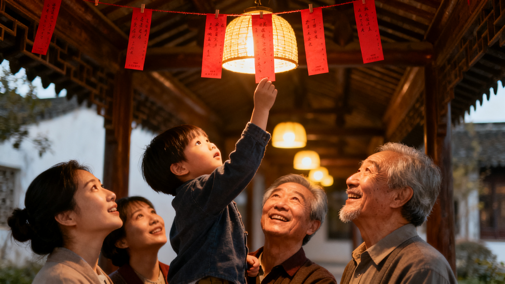

元宵节，又称上元节、灯节，是春节后的第一个重要节日。人们赏月、观灯、猜灯谜、吃元宵，寓意团圆美满。元宵节起源于汉代，汉武帝正月上辛夜在甘泉宫祭祀"太一"的活动，被后人视作正月十五祭祀天神的先声。
元宵节起源于汉代。汉武帝正月上辛夜在甘泉宫祭祀"太一"神，被视为正月十五祭天的先声。东汉明帝时期提倡佛教，下令正月十五夜在宫中和寺院"燃灯表佛"，此后元宵放灯的习俗流传至民间。
元宵（汤圆）是元宵节的标志性食物。北方"滚"元宵，南方"包"汤圆，以糯米粉为皮，内包芝麻、花生、豆沙等馅料，象征团圆美满。此外还有元宵茶、打油茶等地方特色。
辛弃疾《青玉案·元夕》：东风夜放花千树，更吹落，星如雨。宝马雕车香满路。凤箫声动，玉壶光转，一夜鱼龙舞。
